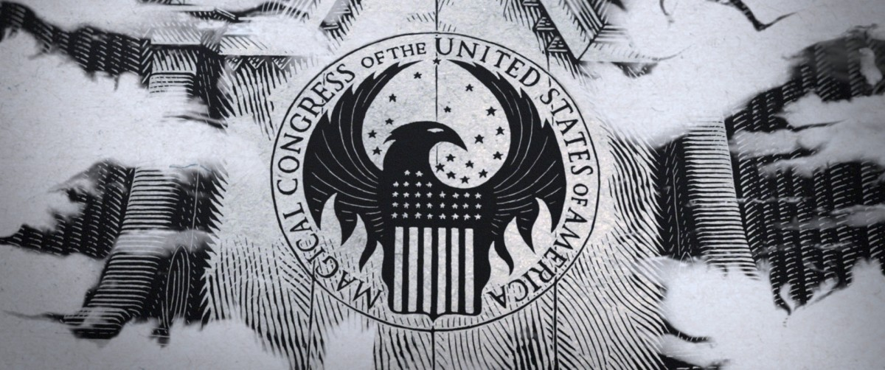
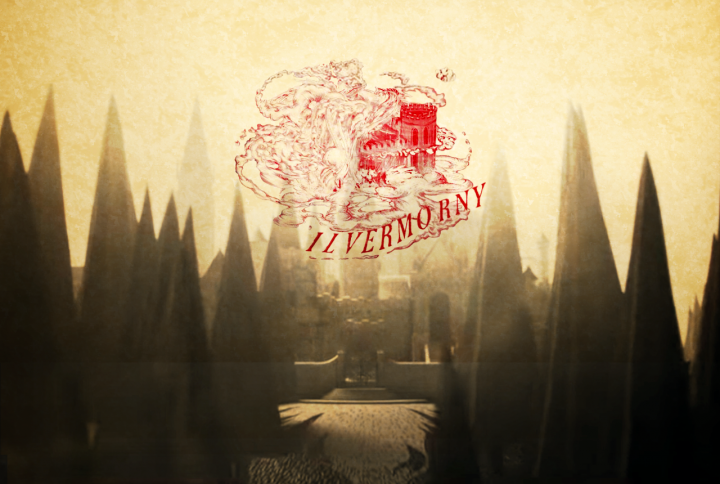

The American Wizarding World
MACUSA
The Magical Congress of the United States of America (MACUSA) is the magical body in charge of governing the wizarding population of the United States of America. It is led by the President of the MACUSA. Unlike the No-Maj United States Congress, which is divided into a House of Representatives and a Senate, the MACUSA only has one legislative chamber. MACUSA is responsible for making laws the magical population of the United States of America must follow, and have agents similar to the No-Maj FBI. MACUSA headquarters are located within the Woolworth Building in downtown New York City. Return to the top of the page.
Ilvermorny School of Witchcraft and Wizardry
Ilvermorny was founded 637 years after Hogwarts, in 1627. Ilvermorny was originally a stone cottage built by an Irish immigrant named Isolt Sayre and her No-Maj husband James Steward. The couples’ children hoped to return to Ireland so they could attend Hogwarts, but instead, their parents built then a school named Ilvermorny. The school started with just the couple acting as teachers and their sons, Chadwick and Webster Boot, as students. Similar to Hogwarts, Ilvermorny has four houses, and each founder got to name one based on their favourite magical creature. Chadwick created Thunderbird, Webster created Wampus, Isolt created Horned Serpent, and James created Pukwudgie. More and more students started enrolling in Ilvermorny, and it is now known as one of the best magical institutes worldwide. Return to the top of the page.